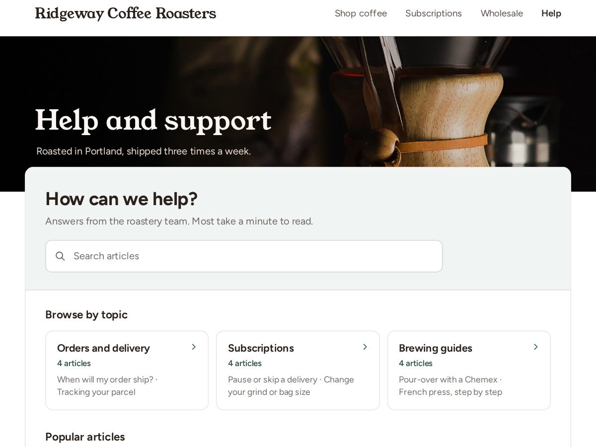

Help Center
A help centre with search, built from blog posts
- Search that shows answers while visitors type
- A topic tile for each blog category you pick
- Most-read articles, ranked by real views
- "Was this helpful?" votes under each post

What it does
Write your help articles as ordinary blog posts, put them in categories such as Shipping or Returns, and this app turns them into a help centre on any page. Visitors get a search box that shows matching articles while they type, a tile for each topic, and your most-read articles, ranked by your blog's own view counts.
Your blog has categories and a post search of its own. What it lacks is a support home page: one place where a customer types "refund" and sees the two articles that answer it, or opens Subscriptions and finds every article on that topic. It also never tells you which articles failed to help, or what people searched for and didn't find.
Premium adds both. A short "Was this article helpful? Yes / No" question sits under each blog post, and the dashboard lists your least helpful articles first. Every search that matched nothing is counted, so you get a list of articles to write next, sorted by how often people asked. Premium also allows up to 12 topics, two more layouts and your own wording for every label.
It uses your site's font, and you pick the colours. Edit an article in the blog and the help centre shows the change within 10 minutes.
Price
Free
- Search, topic tiles and popular articles
- Up to 3 topics
- 5 most-read articles
- Small credit link
Premium
$5/month, 20% off yearly ($4/month). Hidden pre-made plan "Premium" (vendorId premium) stays hidden
- Up to 12 topics and 3 layouts
- "Was this helpful?" votes under posts
- Searches that found no article
- Remove the credit link